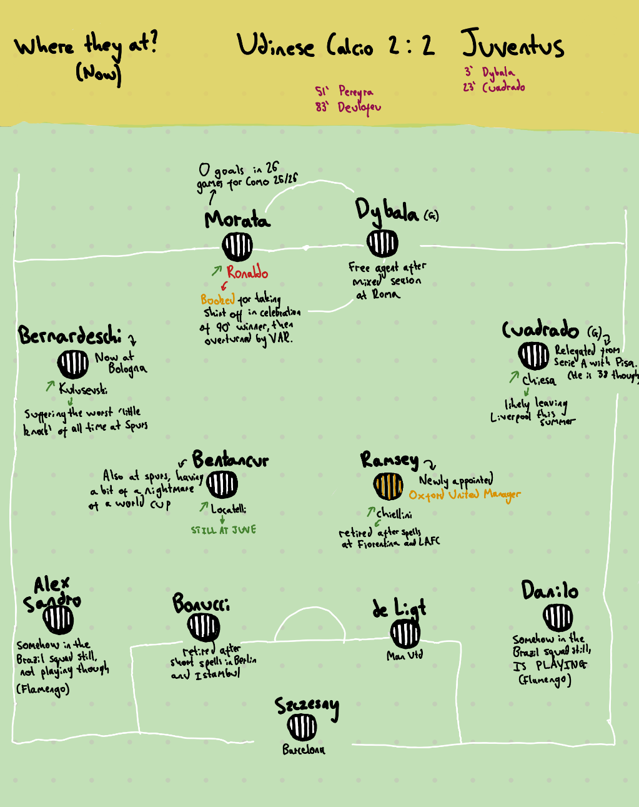

In August 2021, Juventus played out a 2-2 draw with Udinese. In the 60th minute, a 30-year-old Aaron Ramsey was substituted off, marking the end of his final starting appearance for Juve. In the same stoppage, on came a 36-year-old Cristiano Ronaldo.
Yesterday, less than five years on, Ramsey was announced as the new Oxford United manager during Portugal's 5-0 triumph over Uzbekistan, in which Ronaldo became the oldest player to ever score a World Cup brace.
Where are the rest of that Juventus team now?

Ronaldo didn't have a great day in this game, being booked for taking his shirt off in celebration of a late disallowed goal. However, five years on, he's seeing more success than most who played for Juventus that day.
From those who played, only Locatelli remains, but many are now toiling elsewhere in the Italian pyramid. The goalscorers Dybala and Cuadrado played at Roma and Pisa last season respectively. Somehow the starting full-backs are still at large in the Brazil 2026 set-up, both having also retreated to Flamengo for their club careers. Danilo and Alex Sandro must get on well.
Bentancur, Kulusevski and Chiesa all now play in England, but all are struggling to enjoy their time here. It's been a particularly bad past year for the Spurs duo.
Another area of British intrigue surrounds the goalscorers for the hosts. Typically, both Pereyra and Deulofeu notched for Juventus' opponents, both arguably the faces of Pozzo's management of Watford and Udinese.
Whilst some others have retired, only Ramsey has begun the foray into management. I eagerly await Cristiano's arrival in Littlemore after Ramsey's eventual departure.